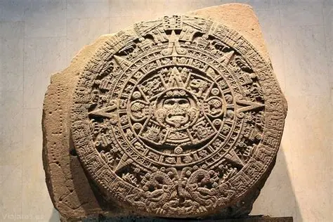
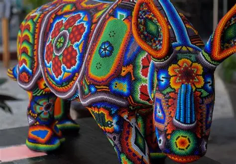
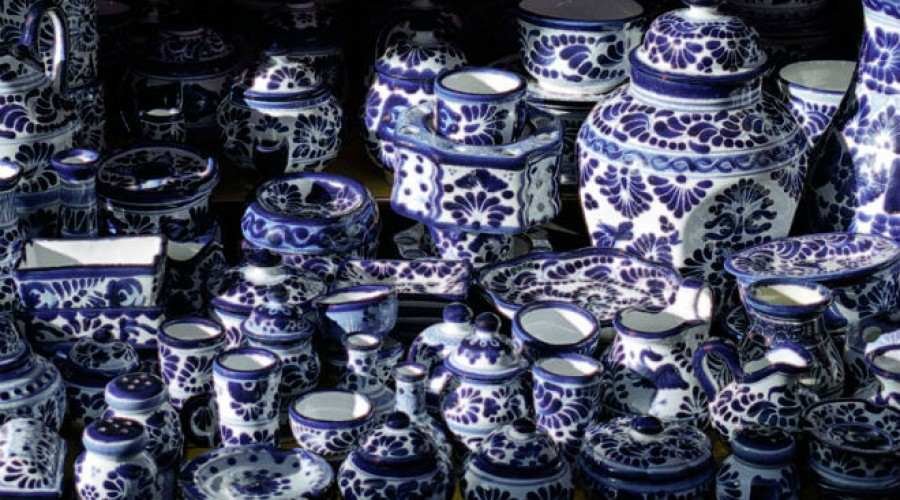
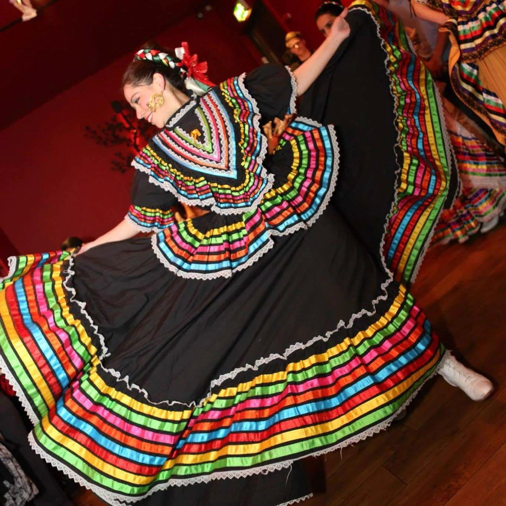
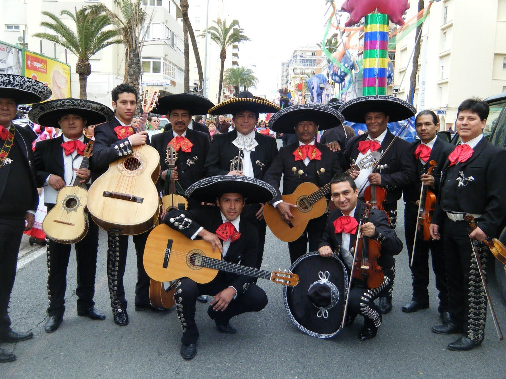

Explora las Salas Culturales

Pirámides
Descubre los misterios y la arquitectura monumental de las grandes civilizaciones prehispánicas.

Piedra del Sol
Explora la cosmovisión, el tiempo y el arte astronómico reflejado en el gran calendario Mexica.

Artesanías
Un viaje por la explosión de color de los alebrijes, el misticismo del barro negro y los textiles únicos.

Talavera
Admira la intrincada tradición cerámica poblana, herencia colonial con sello de identidad nacional.

Trajes Típicos
Viste tu imaginación con la riqueza de hilos, significados e historias de las indumentarias regionales.

Mariachi
Siente la pasión y acordes de la música tradicional, declarada Patrimonio de la Humanidad.
Gastronomía
Deleita tus sentidos con los sabores ancestrales y complejos del mole, tamales y platillos icónicos.
Pirámides
- La Gran Pirámide de Cholula
- El Templo de Kukulkán
- Las Escalinatas Sagradas
Piedra del Sol
- El ciclo de los cinco soles
- Los glifos y su significado
- El tiempo en la antigua ciudad de México-Tenochtitlán
Artesanías
- Alebrijes de Oaxaca
- Textiles chiapanecos
- Cerámica de barro negro
Talavera
- Azulejos y vajillas
- Iconografía barroca
- Proceso de cocción y esmalte
Trajes Típicos
- Traje de charro
- Huipil y rebozo
- Vestidos de fiesta regionales
Mariachi
- Orígenes del mariachi
- Instrumentos tradicionales
- Canciones emblemáticas
Gastronomía
- Mole poblano
- Chiles y maíz
- Postres tradicionales